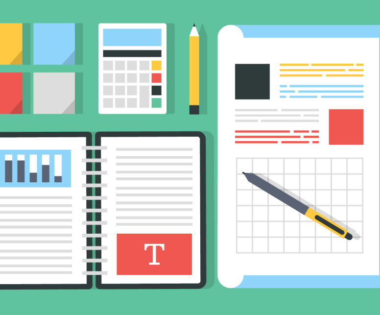
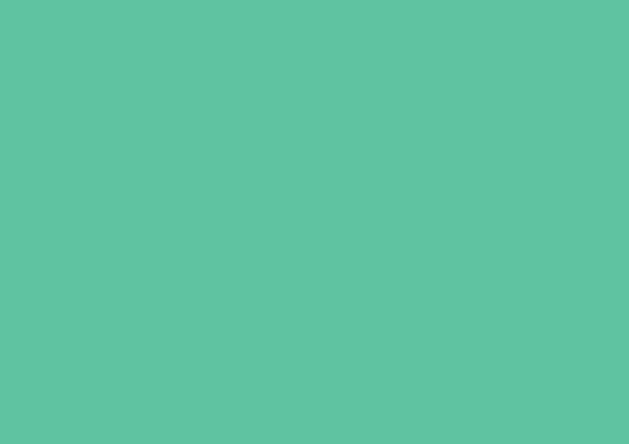
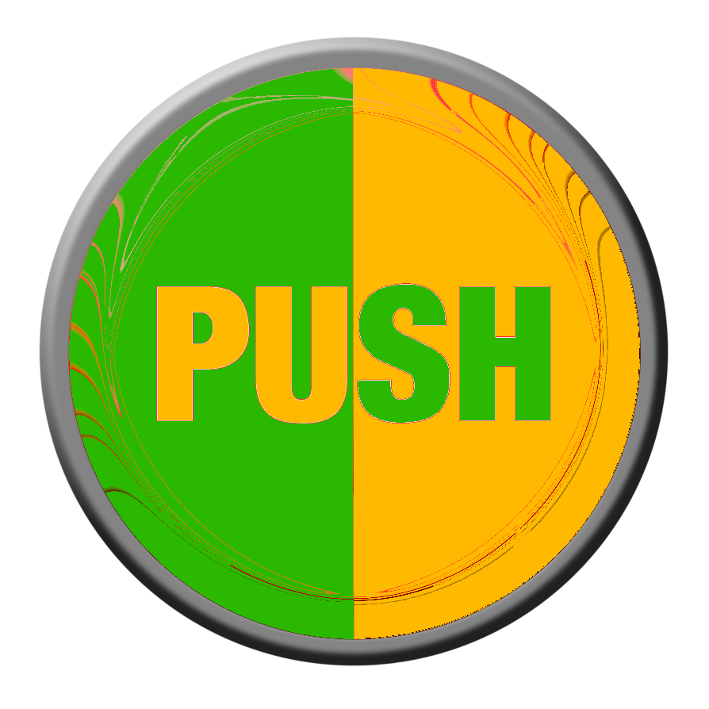
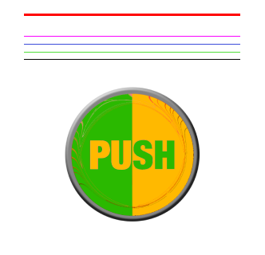

  Исключи ошибки в создании стиля для сайта Самой главной ошибкой в дизайне сайта является использование большого количества разных стилей  Также часто можно встретить использование большого количества ненужных цветов 